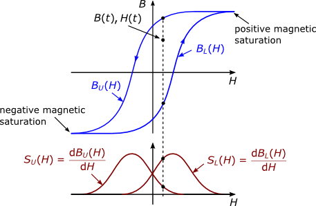

TellinenTellinen Hysteresis Model |
|
Information
This information is part of the Modelica Standard Library maintained by the Modelica Association.
The Tellinen hysteresis model
The Tellinen hysteresis model is described in more detail in [Te98, ZB12]. It is a simple model to describe the static magnetic hysteresis behavior of ferromagnetic materials. It only requires the Upper BU(H) and lower BL(H) branches of the limiting hysteresis loop for the adaption to a material specific hysteresis shape. Coming from negative magnetic saturation with increasing magnetic field strength H(t) the flux density B(T) travels along the BL(H). Coming from positive saturation with a decreasing H(t), B(t) travels along BU(H). The Tellinen model is defined by the following equation, which gives a calculation rule for time derivative of the magnetic flux density B(t) with respect to the current value of B(t), H(t) and its slope dH(t)/dt.
Therein, SU(H) and SL(H) are the derivatives of limiting branches of the hysteresis loop with respect to the magnetic field strength H, as illustrated in Fig 1.
Fig. 1: Upper BU(H) and lower BL(H) branches of the hysteresis envelope curve, their corresponding slope functions SUH(H) and SLH(H) and the actual operating point H(t), B(t).
 |